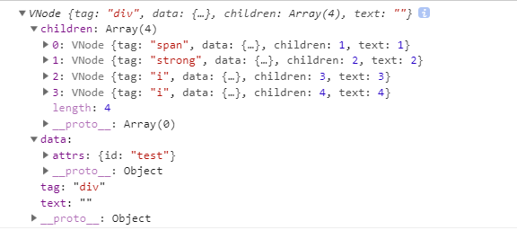
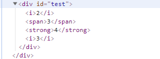
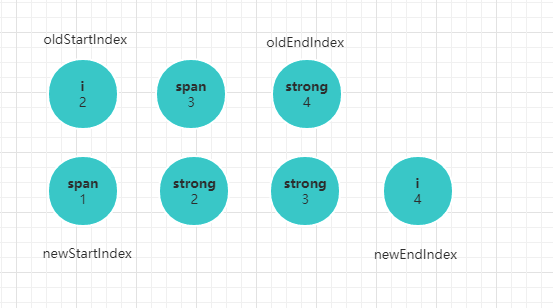
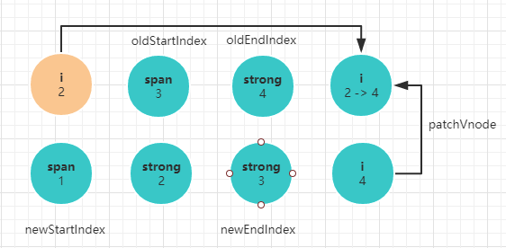
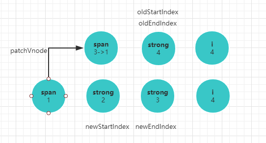
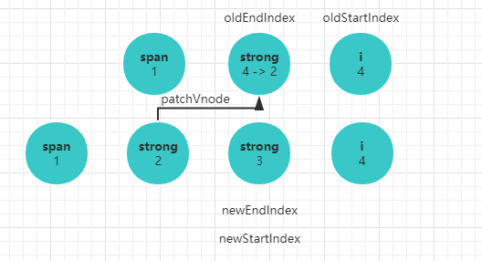
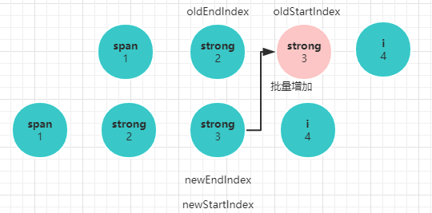

这一节，依然是深入剖析Vue源码系列，上几节内容介绍了
Virtual DOM是Vue在渲染机制上做的优化，而渲染的核心在于数据变化时，如何高效的更新节点，这就是diff算法。由于源码中关于diff算法部分流程复杂，直接剖析每个流程不易于理解，所以这一节我们换一个思路，参考源码来手动实现一个简易版的diff算法。
之前讲到Vue在渲染机制的优化上，引入了Virtual DOM的概念，利用Virtual DOM描述一个真实的DOM,本质上是在JS和真实DOM之间架起了一层缓冲层。当我们通过大量的JS运算,并将最终结果反应到浏览器进行渲染时，Virtual DOM可以将多个改动合并成一个批量的操作，从而减少 dom 重排的次数，进而缩短了生成渲染树和绘制节点所花的时间，达到渲染优化的目的。之前的章节，我们简单的介绍了Vue中Vnode的概念，以及创建Vnode到渲染Vnode再到真实DOM的过程。如果有忘记流程的，可以参考前面的章节分析。
**从render函数到创建虚拟DOM,再到渲染真实节点，这一过程是完整的，也是容易理解的。然而引入虚拟DOM的核心不在这里，而在于当数据发生变化时，如何最优化数据变动到视图更新的过程。这一个过程才是Vnode更新视图的核心，也就是常说的diff算法。**下面跟着我来实现一个简易版的diff算法
8.1 创建基础类§
代码编写过程会遇到很多基本类型的判断，第一步需要先将这些方法封装。
class Util {
constructor() {}
// 检测基础类型
_isPrimitive(value) {
return (typeof value === 'string' || typeof value === 'number' || typeof value === 'symbol' || typeof value === 'boolean')
}
// 判断值不为空
_isDef(v) {
return v !== undefined && v !== null
}
}
// 工具类的使用
const util = new Util()
8.2 创建Vnode§
Vnode这个类在之前章节已经分析过源码，本质上是用一个对象去描述一个真实的DOM元素，简易版关注点在于元素的tag标签，元素的属性集合data,元素的子节点children,text为元素的文本节点,简单的描述类如下：
class VNode {
constructor(tag, data, children) {
this.tag = tag;
this.data = data;
this.children = children;
this.elm = ''
// text属性用于标志Vnode节点没有其他子节点，只有纯文本
this.text = util._isPrimitive(this.children) ? this.children : ''
}
}
8.3 模拟渲染过程§
接下来需要创建另一个类模拟将render函数转换为Vnode,并将Vnode渲染为真实DOM的过程，我们将这个类定义为Vn,Vn具有两个基本的方法createVnode, createElement, 分别实现创建虚拟Vnode,和创建真实DOM的过程。
8.3.1 createVnode§
createVnode模拟Vue中render函数的实现思路，目的是将数据转换为虚拟的Vnode,先看具体的使用和定义。
// index.html
<script src="diff.js">
<script>
// 创建Vnode
let createVnode = function() {
let _c = vn.createVnode;
return _c('div', { attrs: { id: 'test' } }, arr.map(a => _c(a.tag, {}, a.text)))
}
// 元素内容结构
let arr =
[{
tag: 'i',
text: 2
}, {
tag: 'span',
text: 3
}, {
tag: 'strong',
text: 4
}]
</script>
// diff.js
(function(global) {
class Vn {
constructor() {}
// 创建虚拟Vnode
createVnode(tag, data, children) {
return new VNode(tag, data, children)
}
}
global.vn = new Vn()
}(this))
这是一个完整的Vnode对象，我们已经可以用这个对象来简单的描述一个DOM节点，而createElement就是将这个对象对应到真实节点的过程。最终我们希望的结果是这样的。
Vnode对象

渲染结果

8.3.2 createElement§
渲染真实DOM的过程就是遍历Vnode对象，递归创建真实节点的过程，这个不是本文的重点，所以我们可以粗糙的实现。
class Vn {
createElement(vnode, options) {
let el = options.el;
if(!el || !document.querySelector(el)) return console.error('无法找到根节点')
let _createElement = vnode => {
const { tag, data, children } = vnode;
const ele = document.createElement(tag);
// 添加属性
this.setAttr(ele, data);
// 简单的文本节点，只要创建文本节点即可
if (util._isPrimitive(children)) {
const testEle = document.createTextNode(children);
ele.appendChild(testEle)
} else {
// 复杂的子节点需要遍历子节点递归创建节点。
children.map(c => ele.appendChild(_createElement(c)))
}
return ele
}
document.querySelector(el).appendChild(_createElement(vnode))
}
}
8.3.3 setAttr§
setAttr是为节点设置属性的方法，利用DOM原生的setAttribute为每个节点设置属性值。
class Vn {
setAttr(el, data) {
if (!el) return
const attrs = data.attrs;
if (!attrs) return;
Object.keys(attrs).forEach(a => {
el.setAttribute(a, attrs[a]);
})
}
}
至此一个简单的 **数据 -> Virtual DOM => 真实DOM**的模型搭建成功,这也是数据变化、比较、更新的基础。
8.4 diff算法实现§
更新组件的过程首先是响应式数据发生了变化,数据频繁的修改如果直接渲染到真实DOM上会引起整个DOM树的重绘和重排，频繁的重绘和重排是极其消耗性能的。如何优化这一渲染过程，Vue源码中给出了两个具体的思路，其中一个是在介绍响应式系统时提到的将多次修改推到一个队列中，在下一个tick去执行视图更新，另一个就是接下来要着重介绍的diff算法，将需要修改的数据进行比较，并只渲染必要的DOM。
数据的改变最终会导致节点的改变，所以diff算法的核心在于在尽可能小变动的前提下找到需要更新的节点，直接调用原生相关DOM方法修改视图。不管是真实DOM还是前面创建的Virtual DOM,都可以理解为一颗DOM树，算法比较节点不同时，只会进行同层节点的比较，不会跨层进行比较，这也大大减少了算法复杂度。
8.4.1 diffVnode§
在之前的基础上，我们实现一个思路，1秒之后数据发生改变。
// index.html
setTimeout(function() {
arr = [{
tag: 'span',
text: 1
},{
tag: 'strong',
text: 2
},{
tag: 'i',
text: 3
},{
tag: 'i',
text: 4
}]
// newVnode 表示改变后新的Vnode树
const newVnode = createVnode();
// diffVnode会比较新旧Vnode树，并完成视图更新
vn.diffVnode(newVnode, preVnode);
})
diffVnode的逻辑，会对比新旧节点的不同，并完成视图渲染更新
class Vn {
···
diffVnode(nVnode, oVnode) {
if (!this._sameVnode(nVnode, oVnode)) {
// 直接更新根节点及所有子节点
return ***
}
this.generateElm(vonde);
this.patchVnode(nVnode, oVnode);
}
}
8.4.2 _sameVnode§
新旧节点的对比是算法的第一步，如果新旧节点的根节点不是同一个节点，则直接替换节点。这遵从上面提到的原则，只进行同层节点的比较，节点不一致，直接用新节点及其子节点替换旧节点。为了理解方便，我们假定节点相同的判断是tag标签是否一致(实际源码要复杂)。
class Vn {
_sameVnode(n, o) {
return n.tag === o.tag;
}
}
8.4.3 generateElm§
generateElm的作用是跟踪每个节点实际的真实节点，方便在对比虚拟节点后实时更新真实DOM节点。虽然Vue源码中做法不同，但是这不是分析diff的重点。
class Vn {
generateElm(vnode) {
const traverseTree = (v, parentEl) => {
let children = v.children;
if(Array.isArray(children)) {
children.forEach((c, i) => {
c.elm = parentEl.childNodes[i];
traverseTree(c, c.elm)
})
}
}
traverseTree(vnode, this.el);
}
}
执行generateElm方法后，我们可以在旧节点的Vnode中跟踪到每个Virtual DOM的真实节点信息。
8.4.4 patchVnode§
patchVnode是新旧Vnode对比的核心方法，对比的逻辑如下。
- 节点相同，且节点除了拥有文本节点外没有其他子节点。这种情况下直接替换文本内容。
- 新节点没有子节点，旧节点有子节点，则删除旧节点所有子节点。
- 旧节点没有子节点，新节点有子节点，则用新的所有子节点去更新旧节点。
- 新旧都存在子节点。则对比子节点内容做操作。
代码逻辑如下：
class Vn {
patchVnode(nVnode, oVnode) {
if(nVnode.text && nVnode.text !== oVnode) {
// 当前真实dom元素
let ele = oVnode.elm
// 子节点为文本节点
ele.textContent = nVnode.text;
} else {
const oldCh = oVnode.children;
const newCh = nVnode.children;
// 新旧节点都存在。对比子节点
if (util._isDef(oldCh) && util._isDef(newCh)) {
this.updateChildren(ele, newCh, oldCh)
} else if (util._isDef(oldCh)) {
// 新节点没有子节点
} else {
// 老节点没有子节点
}
}
}
}
上述例子在patchVnode过程中，新旧子节点都存在，所以会走updateChildren分支。
8.4.5 updateChildren§
子节点的对比，我们通过文字和画图的形式分析，通过图解的形式可以很清晰看到diff算法的巧妙之处。
大致逻辑是：
- 旧节点的起始位置为
oldStartIndex,截至位置为oldEndIndex,新节点的起始位置为newStartIndex,截至位置为newEndIndex。 - 新旧
children的起始位置的元素两两对比，顺序是newStartVnode, oldStartVnode;newEndVnode, oldEndVnode;newEndVnode, oldStartVnode;newStartIndex, oldEndIndex newStartVnode, oldStartVnode节点相同，执行一次patchVnode过程，也就是递归对比相应子节点，并替换节点的过程。oldStartIndex，newStartIndex都像右移动一位。newEndVnode, oldEndVnode节点相同，执行一次patchVnode过程，递归对比相应子节点，并替换节点。oldEndIndex， newEndIndex都像左移动一位。newEndVnode, oldStartVnode节点相同，执行一次patchVnode过程，并将旧的oldStartVnode移动到尾部,oldStartIndex右移一味，newEndIndex左移一位。newStartIndex, oldEndIndex节点相同，执行一次patchVnode过程，并将旧的oldEndVnode移动到头部,oldEndIndex左移一味，newStartIndex右移一位。- 四种组合都不相同，则会搜索旧节点所有子节点，找到将这个旧节点和
newStartVnode执行patchVnode过程。 - 不断对比的过程使得
oldStartIndex不断逼近oldEndIndex，newStartIndex不断逼近newEndIndex。当oldEndIndex <= oldStartIndex说明旧节点已经遍历完了，此时只要批量增加新节点即可。当newEndIndex <= newStartIndex说明旧节点还有剩下，此时只要批量删除旧节点即可。
结合前面的例子：
第一步：

第二步：

第三步：

第三步：

第四步：

根据这些步骤，代码实现如下：
class Vn {
updateChildren(el, newCh, oldCh) {
// 新children开始标志
let newStartIndex = 0;
// 旧children开始标志
let oldStartIndex = 0;
// 新children结束标志
let newEndIndex = newCh.length - 1;
// 旧children结束标志
let oldEndIndex = oldCh.length - 1;
let oldKeyToId;
let idxInOld;
let newStartVnode = newCh[newStartIndex];
let oldStartVnode = oldCh[oldStartIndex];
let newEndVnode = newCh[newEndIndex];
let oldEndVnode = oldCh[oldEndIndex];
// 遍历结束条件
while (newStartIndex <= newEndIndex && oldStartIndex <= oldEndIndex) {
// 新children开始节点和旧开始节点相同
if (this._sameVnode(newStartVnode, oldStartVnode)) {
this.patchVnode(newCh[newStartIndex], oldCh[oldStartIndex]);
newStartVnode = newCh[++newStartIndex];
oldStartVnode = oldCh[++oldStartIndex]
} else if (this._sameVnode(newEndVnode, oldEndVnode)) {
// 新childre结束节点和旧结束节点相同
this.patchVnode(newCh[newEndIndex], oldCh[oldEndIndex])
oldEndVnode = oldCh[--oldEndIndex];
newEndVnode = newCh[--newEndIndex]
} else if (this._sameVnode(newEndVnode, oldStartVnode)) {
// 新childre结束节点和旧开始节点相同
this.patchVnode(newCh[newEndIndex], oldCh[oldStartIndex])
// 旧的oldStartVnode移动到尾部
el.insertBefore(oldCh[oldStartIndex].elm, null);
oldStartVnode = oldCh[++oldStartIndex];
newEndVnode = newCh[--newEndIndex];
} else if (this._sameVnode(newStartVnode, oldEndVnode)) {
// 新children开始节点和旧结束节点相同
this.patchVnode(newCh[newStartIndex], oldCh[oldEndIndex]);
el.insertBefore(oldCh[oldEndIndex].elm, oldCh[oldStartIndex].elm);
oldEndVnode = oldCh[--oldEndIndex];
newStartVnode = newCh[++newStartIndex];
} else {
// 都不符合的处理，查找新节点中与对比旧节点相同的vnode
this.findIdxInOld(newStartVnode, oldCh, oldStartIdx, oldEndIdx);
}
}
// 新节点比旧节点多，批量增加节点
if(oldEndIndex <= oldStartIndex) {
for (let i = newStartIndex; i <= newEndIndex; i++) {
// 批量增加节点
this.createElm(oldCh[oldEndIndex].elm, newCh[i])
}
}
}
createElm(el, vnode) {
let tag = vnode.tag;
const ele = document.createElement(tag);
this._setAttrs(ele, vnode.data);
const testEle = document.createTextNode(vnode.children);
ele.appendChild(testEle)
el.parentNode.insertBefore(ele, el.nextSibling)
}
// 查找匹配值
findIdxInOld(newStartVnode, oldCh, start, end) {
for (var i = start; i < end; i++) {
var c = oldCh[i];
if (util.isDef(c) && this.sameVnode(newStartVnode, c)) { return i }
}
}
}
8.5 diff算法优化§
前面有个分支，当四种比较节点都找不到匹配时，会调用findIdxInOld找到旧节点中和新的比较节点一致的节点。节点搜索在数量级较大时是缓慢的。查看Vue的源码，发现它在这一个环节做了优化，也就是我们经常在编写列表时被要求加入的唯一属性key，有了这个唯一的标志位，我们可以对旧节点建立简单的字典查询，只要有key值便可以方便的搜索到符合要求的旧节点。修改代码：
class Vn {
updateChildren() {
···
} else {
// 都不符合的处理，查找新节点中与对比旧节点相同的vnode
if (!oldKeyToId) oldKeyToId = this.createKeyMap(oldCh, oldStartIndex, oldEndIndex);
idxInOld = util._isDef(newStartVnode.key) ? oldKeyToId[newStartVnode.key] : this.findIdxInOld(newStartVnode, oldCh, oldStartIndex, oldEndIndex);
// 后续操作
}
}
// 建立字典
createKeyMap(oldCh, start, old) {
const map = {};
for(let i = start; i < old; i++) {
if(oldCh.key) map[key] = i;
}
return map;
}
}
8.6 问题思考§
最后我们思考一个问题，Virtual DOM 的重绘性能真的比单纯的innerHTML要好吗，其实并不是这样的，作者的解释
innerHTML: render html string O(template size) +重新创建所有DOM元素O(DOM size)
Virtual DOM: render Virtual DOM + diff O(template size) +必要的DOM更新O(DOM change)
Virtual DOM render + diff显然比渲染 html 字符串要慢，但是！它依然是纯 js 层面的计算，比起后面的DOM操作来说，依然便宜了太多。可以看到，innerHTML的总计算量不管是js计算还是DOM操作都是和整个界面的大小相关，但Virtual DOM的计算量里面，只有js计算和界面大小相关，DOM 操作是和数据的变动量相关的。